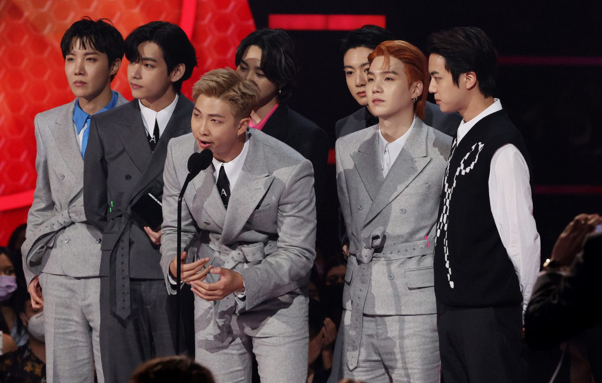
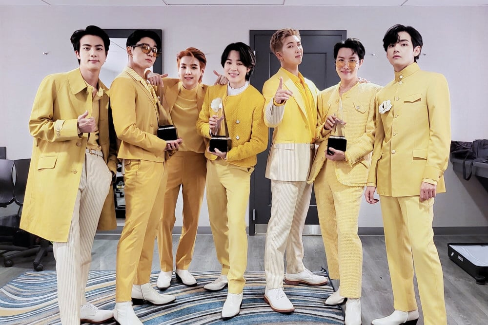

BTS AWARDS

BTS took home three awards at the American Music Awards 2021 , including the top prize of Artist Of The Year. The record-breaking Korean group also collected the awards for Favourite Pop Duo Or Group and Favourite Pop Song for ‘Butter’ at the ceremony in Los Angeles.

BTS wins big at the '2021 American Music Awards' + becomes the first and only Asian act to win the 'Artist of the Year'.Ahead of the televised show, taking place at the Microsoft Theater in Los Angeles, a slew of awards were announced earlier in the day.
The boyband won 6 awards, including the Daesang (Grand Prize). They also won the Best Album Award, Best Song Award, the K-Wave Award, the WhosFandom Award, and a Bonsang (Main Award).
| Publication | Year | World record | Record holder |
|---|---|---|---|
| Guinness World Records |
2017 | Most viewed music video online in 24 hours by a K-pop group | DNA |
| Most Twitter engagements (average retweets) overall | BTS | ||
| Most Twitter engagements (average retweets) for a music group | |||
| 2018 | Most viewed YouTube music video in 24 hours | IDOL | |
| First Korean act to reach No.1 on the Billboard 200 albums chart | BTS | ||
| First Korean act to reach No.1 on the Billboard Artist 100 | |||
| First K-pop group to reach the Top 10 on the US singles chart | |||
| 2019 | Most viewed YouTube music video in 24 hours by a K-pop group | Boy With Luv | |
| Most viewed YouTube music video in 24 hours | |||
| Most viewed YouTube video in 24 hours | |||
| Best-selling album in South Korea | Map Of The Soul: Persona | ||
| Fastest to reach one million followers on TikTok | BTS | ||
| 2020 | Most weeks at No.1 on Billboard Social 50 chart | ||
| Best-selling album in South Korea | Map Of The Soul:7 | ||
| Highest annual earnings for a K-Pop band (current year) | BTS | ||
| Most viewed YouTube music video in 24 hours by a K-pop group | Dynamite | ||
| Most viewed YouTube music video in 24 hours | |||
| Most viewed YouTube video in 24 hours | Dynamite | ||
| Most simultaneous viewers for a music video on YouTube Premieres | |||
| Most viewers for the premiere of a video on YouTube | Dynamite | ||
| Most viewers for a music concert live stream on a bespoke platform[u] | BTS | ||
| Most "daesang" ("grand prize") awards won at the Mnet Asian Music Awards | |||
| 2021 | Most Nickelodeon Kids' Choice Awards won by a music group[v] | BTS | |
| Most weeks on the US Hot 100 by a K-pop track | Dynamite | ||
| Most weeks at No.1 on Billboard's Digital Song Sales Chart | |||
| Most streamed act on Spotify (group) | BTS | ||
| Most followers on Instagram for a music group | |||
| Most viewers for the premiere of a video on YouTube | Butter | ||
| Most viewers for the premiere of a music video on YouTube | |||
| Most streamed track on Spotify in the first 24 hours | |||
| Most viewed YouTube music video in 24 hours | |||
| Most viewed YouTube music video in 24 hours by a K-pop group | |||
| 2022 | Most followers on TikTok for a music group | BTS | |
| Most followers on Twitter for a music group | |||
| Most Nickelodeon Kids' Choice Awards won by a music group | |||
| Most followers on Spotify (group) | BTS | ||
| 2023 | Most streamed act on Spotify (group) | BTS | |
| Most Nickelodeon Kids' Choice Awards won by a music group | |||
| Most followers on Instagram for a music group | |||
| Most followers on Twitter for a music group | |||
| Most followers on TikTok for a music group |